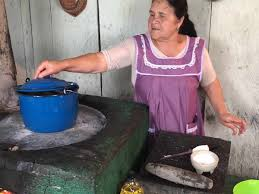

Pozoncle
Un delicioso caldo tradicional con maíz y carne. Leer más
recetas inccreiblemente ricas
me gusta mucho el ambito de la gastronomia y me apaciona mucho hacer recetas y en general cocinar
Un delicioso caldo tradicional con maíz y carne. Leer más
Postre frío y cremoso con base de galleta. Leer más
Tortillas gruesas rellenas de guisos deliciosos. Leer más